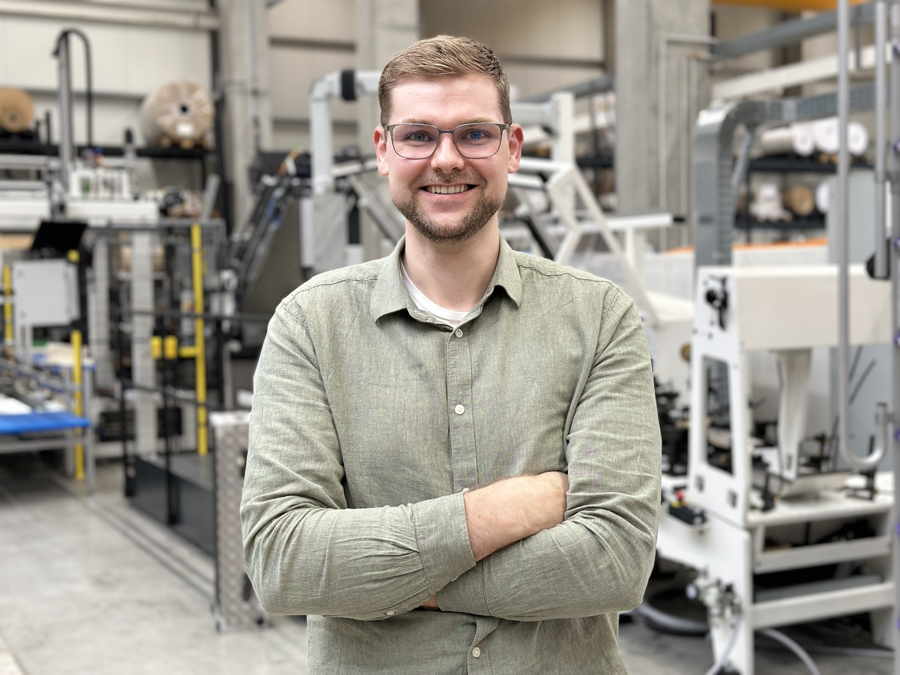
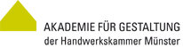
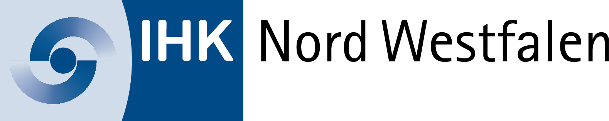
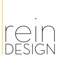

Technischer Hintergrund. Praktische Erfahrung. Strukturiertes Denken.

Technischer Redakteur · Maschinenbau
Vom Feinwerkmechaniker über den Maschinenbautechniker bis zur betriebswirtschaftlichen Weiterbildung.
Hans-Böckler Berufskolleg, Münster

Akademie für Gestaltung in Münster
Fachrichtung Maschinenbau · nebenberufliche Weiterbildung
Hans-Böckler Berufskolleg, Münster

Nebenberufliche Weiterbildung
IHK Nord Westfalen
Von der praktischen Fertigung über die Selbstständigkeit bis zur technischen Dokumentation im Maschinenbau.
Wittkamp Maschinen- und Anlagenbau GmbH & Co. KG

reinDESIGN Projektgestaltung
Pieper Maschinenbau GmbH & Co. KG
Igema GmbH
GARANT Maschinenhandel GmbH
Werkzeuge, Methoden und Fachgebiete aus meiner praktischen und technischen Tätigkeit.
Einmonatiger Auslandaufenthalt und Zusatzqualifikation „Junges Handwerk in der Entwicklungszusammenarbeit“.
Dreiwöchiger Auslandsaufenthalt zur Mitarbeit in einem sozialen Bauprojekt.
Vereinssport · HSG Bever-Ems · HSG NRG